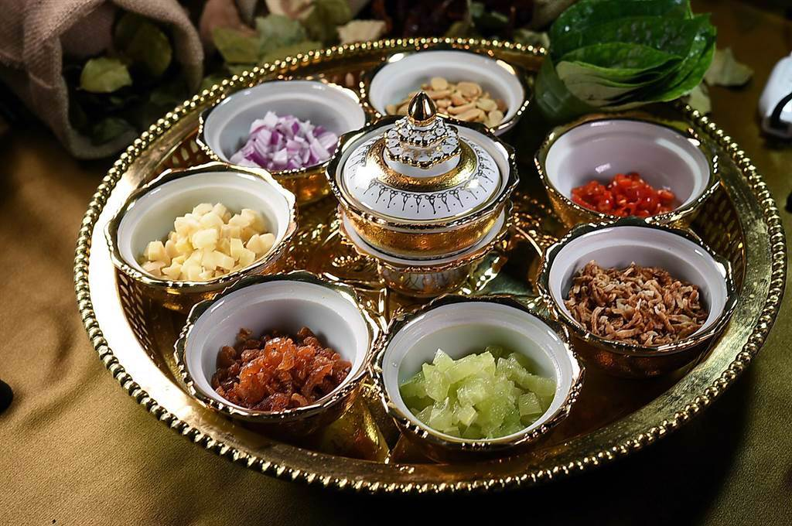
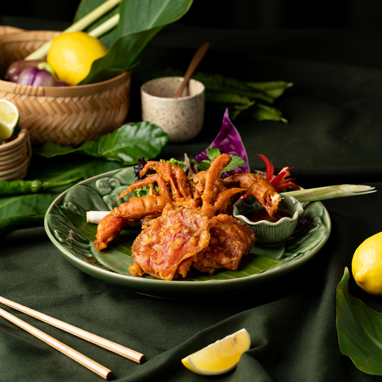
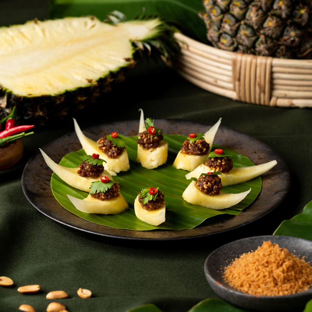
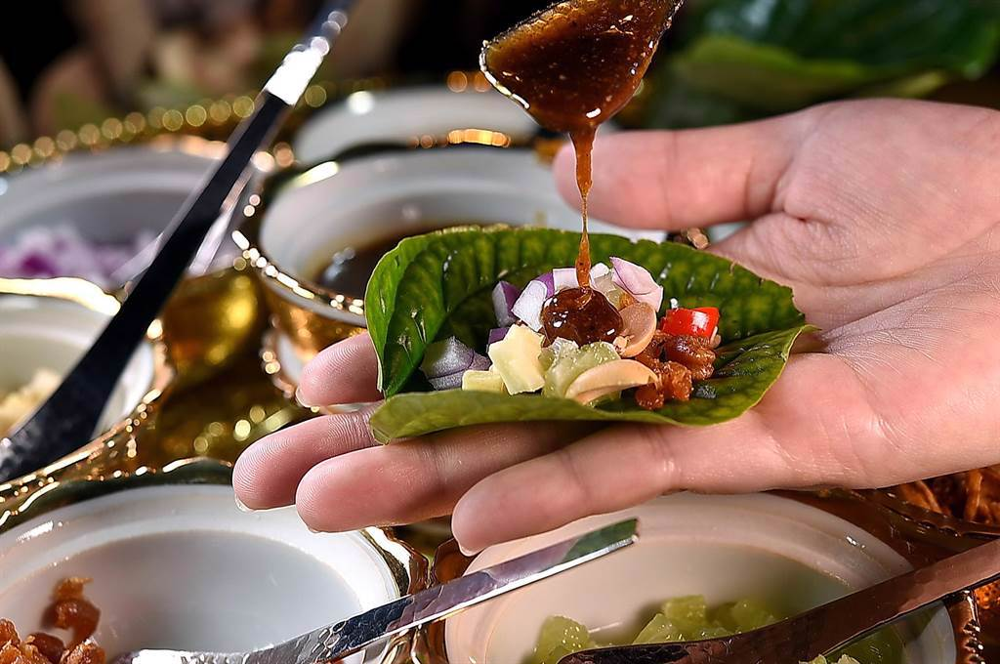
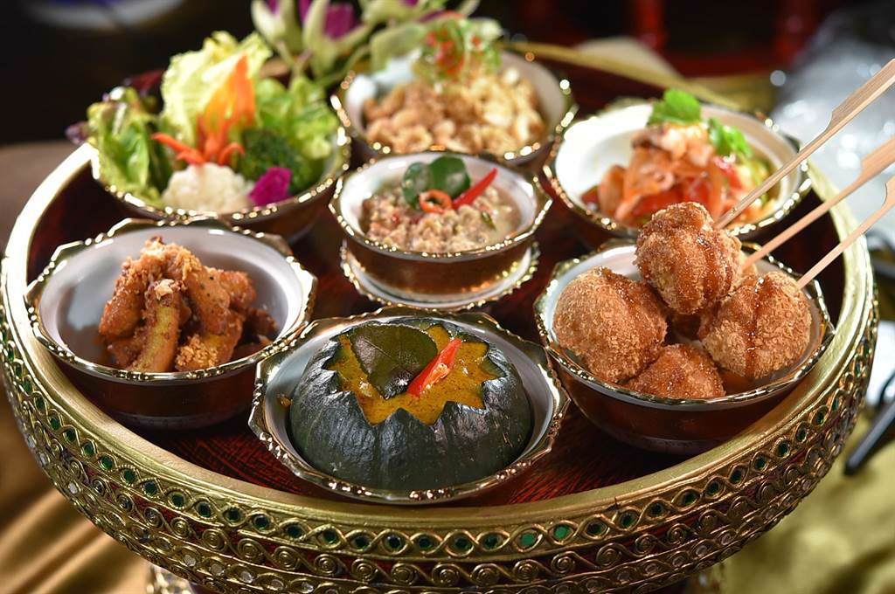
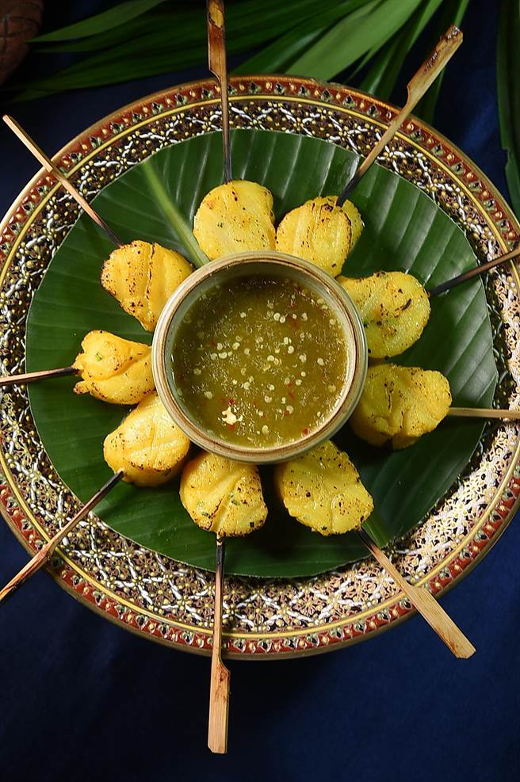

由台灣從南到北遍佈風格與價位各異的泰菜餐廳便可見一斑。
泰菜最早起源於歐亞大陸
泰國宮廷料理融合了數百年來各個種族與文化的影響，
我們當今所認知的傳統泰國菜樣貌，實際上受到印度、中國甚至歐洲國家所傳入的技術與食材影響甚深。
例如中國的「文昌雞」透過移民傳到泰國、馬來西亞、新加坡等地，並演變成各種不同的版本。
辣椒十七世紀才傳入
十六世紀以前，泰國菜的基底已多為蝦醬、海鮮河鮮，以及各種蔬菜與香草。 而泰國菜不可或缺的元素「辣椒」，則是於十七世紀，由葡萄牙傳教士從南美洲帶進泰國。
融會貫通東南亞飲食精華
直到近代又吸收了來自緬甸、寮國、越南甚至西方國家的元素、技術、食材及料理概念，
整體來說，風味變得更好更豐富完整。泰國菜仍是世界上相當龐大複雜的菜系之一，
但是現今就連在泰國本地，也得花點時間才找得到傳統正宗的泰國菜，而這已是許多國家在料理上的共同現象。
泰國料理充滿酸、甜、鹹、辣各種味道與觸感，其實苦味元素也相當重要。
另外，泰國料理的重點特色是大量的芬芳香氣，來自包含檸檬草、香茅、南薑、泰國青檸、各種香草葉、新鮮椰奶，
以及各式各樣的發酵海鮮食品，像是魚露、蝦醬和發酵魚醬 等。
     
音樂AND影片
首頁中國宮廷美食介紹 韓國宮廷美食介紹 義大利傳統美食介紹 心得